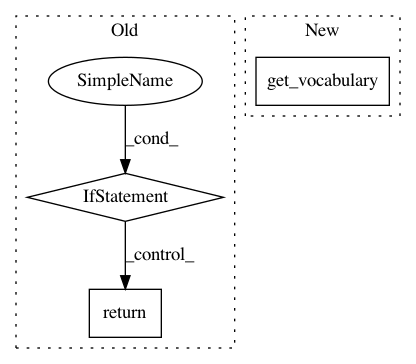

0f6b6eda26f8ccc7c8803fa2b8fab0f43fa4672a,keras/layers/preprocessing/string_lookup.py,StringLookup,get_vocabulary,#StringLookup#,298
Before Change
return dict(list(base_config.items()) + list(config.items()))
def get_vocabulary(self):
if self._table_handler.vocab_size() == 0:
return []
if self.invert:
ids, strings = self._table_handler.data()
else:
strings, ids = self._table_handler.data()
After Change
return dict(list(base_config.items()) + list(config.items()))
def get_vocabulary(self):
vocab = super(StringLookup, self).get_vocabulary()
return [tf.compat.as_text(x, self.encoding) for x in vocab]
def set_vocabulary(self, vocab, idf_weights=None):
if isinstance(vocab, str):
In pattern: SUPERPATTERN
Frequency: 3
Non-data size: 3
Instances
Project Name: keras-team/keras
Commit Name: 0f6b6eda26f8ccc7c8803fa2b8fab0f43fa4672a
Time: 2021-02-25
Author: scottzhu@google.com
File Name: keras/layers/preprocessing/string_lookup.py
Class Name: StringLookup
Method Name: get_vocabulary
Project Name: WZBSocialScienceCenter/tmtoolkit
Commit Name: d8f3ece8fc66ed8caa157a0de302811e4b2d0427
Time: 2019-02-08
Author: markus.konrad@wzb.eu
File Name: tmtoolkit/preprocess/_tmpreproc.py
Class Name: TMPreproc
Method Name: vocabulary
Project Name: WZBSocialScienceCenter/tmtoolkit
Commit Name: ac854505ebcc1ba7992ed4e070f51c3b8be2e69c
Time: 2019-05-03
Author: markus.konrad@wzb.eu
File Name: tmtoolkit/preprocess/_tmpreproc.py
Class Name: TMPreproc
Method Name: get_dtm